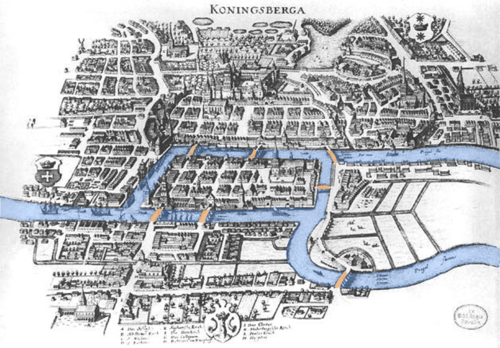
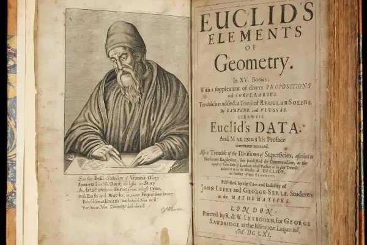
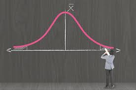

Διακριτά μαθηματικά

Περιγραφή
Διακριτά μαθηματικά
ονομάζεται η μελέτη μαθηματικών δομών που είναι θεμελιωδώς διακριτές αντί για συνεχείς.
Σε αντίθεση με τους πραγματικούς αριθμούς που έχουν την ιδιότητα να "μεταβάλλονται ομαλά",
τα αντικείμενα που μελετώνται στα διακριτά μαθηματικά - όπως οι ακέραιοι, οι γράφοι και οι προτάσεις της λογικής –
δεν μεταβάλλονται ομαλά κατά αυτόν τον τρόπο, αλλά έχουν ξεχωριστές, διακριτές τιμές.
Τα διακριτά μαθηματικά επομένως αποκλείουν θέματα των "συνεχών μαθηματικών",
όπως ο απειροστικός λογισμός και η ανάλυση.
Δομή μαθήματος
Το μάθημα οργανώνεται στα εξής κεφάλαια με την σειρά
που αναγράφονται
- Θεωρία συνόλων
- Προτασιακός λογισμός
- Συνδυαστική
- Θεωρία γράφων
- Πιθανότητες
- Θεωρία κωδικοποίησης
Το κόστος των μαθημάτων ανέρχεται στα 500$ εκ των οποίων τα 150$
πρέπει να δωθούν ως εγγύηση κατά την πραγματοποίηση της εγγραφής.
Στοιχεία πιθανοτήτων
Περιγραφή
Η "θεωρία πιθανοτήτων" είναι μια αξιωματική μαθηματική θεωρία μέτρου.
Πρόκειται δηλαδή για τον κλάδο των μαθηματικών ο οποίος ασχολείται με την ανάλυση τυχαίων φαινομένων.
Κεντρικό ρόλο στη θεωρία πιθανοτήτων παίζει η έννοια της πιθανότητας, ενώ σημαντικές είναι οι τυχαίες μεταβλητές, οι συναρτήσεις κατανομής,
οι στοχαστικές διαδικασίες και τα γεγονότα: μαθηματικές αφαιρέσεις
μη ντετερμινιστικών συμβάντων τα οποία είτε συμβαίνουν μία φορά είτε εξελίσσονται με το πέρασμα του χρόνου.
Δομή μαθήματος
Το μάθημα "Στοιχεία πιθανοτήτων"
οργανώνεται ως εξής:
- Πιθανότητες και συνδυαστική
- Ανεξαρτησία και δεσμευμένη πιθανότητα
- Συνεχείς τυχαίες μεταβλητές
- Διακριτές κατανομές
- Το κεντρικό οριακό θεώρημα
- Συνεχής από κοινού κατανομή
Το κόστος των μαθημάτων ανέρχεται στα 500$, εκ των οποίων
τα 150$ πρέπει να δωθούν ως εγγύηση κατά
την πραγματοποίηση της εγγραφής.
Μαθηματική ανάλυση

Περιγραφή
Η Μαθηματική Ανάλυση αναπτύχθηκε επίσημα τον 17ο αιώνα κατά την διάρκεια της Επιστημονικής Επανάστασης,
Eίναι ένα από τα βασικά πεδία των μαθηματικών, το οποίο ασχολείται με την έννοια της απόστασης.
Σημαντικές έννοιες της μαθηματικής ανάλυσης είναι οι πραγματικοί αριθμοί, η συνάρτηση, το όριο και η σύγκλιση,
η διαφορισιμότητα ή παραγωγισιμότητα και η ολοκληρωσιμότητα, η μετρική κ.ά.
Το κύριο αντικείμενο μελέτης της ανάλυσης είναι η μελέτη των συναρτήσεων.
Οι βασικές έννοιες της ανάλυσης είναι το όριο,η παράγωγος και το ολοκλήρωμα.
Δομή μαθήματος
Το μάθημα οργανώνεται στα εξής κεφάλαια:
- Ακολουθίες και όρια
- Μιγαδική Ανάλυση
- Διαφορικές Εξισώσεις
- Άμεσες και επαναληπτικές μέθοδοι
- Παρεμβολή, παρέκταση, και παλινδρόμηση
- Αριθμητική παραγώγιση και ολοκλήρωση
- Νόρμες διανυσμάτων
Το κόστος των μαθημάτων ανέρχεται στα 500$, εκ των οποίων
τα 150$ πρέπει να δωθούν ως εγγύηση κατά
την πραγματοποίηση της εγγραφής.
Ευκλείδεια γεωμετρία

Περιγραφή
Το αντικείμενο της Ευκλείδειας Γεωμετρίας είναι η μελέτη του χώρου και των σχημάτων που μπορούν να νοηθούν μέσα σε αυτόν.
Για περισσότερα από δύο χιλιάδες χρόνια το επίθετο "Ευκλείδεια" γεωμετρία δεν ήταν απαραίτητο γιατί κανένα άλλο είδος γεωμετρίας δεν είχε δημιουργηθεί.
Η Ευκλείδεια γεωμετρία είναι ένα μαθηματικό σύστημα που αποδίδεται στον αλεξανδρινό Έλληνα μαθηματικό Ευκλείδη και περιγράφεται στο βιβλίο του γεωμετρίας με όνομα: τα Στοιχεία.
Η μέθοδος του Ευκλείδη βασίζεται στην υπόθεση ενός μικρού συνόλου αξιωμάτων και στην εξαγωγή πολλών προτάσεων(θεωρημάτων) από αυτά.
Τα Στοιχεία αρχίζουν με επιπεδομετρία που διδάσκεται στο σχολείο ως το πρώτο αξιωματικό σύστημα αλλά και τα πρώτα παραδείγματα
επίσημης απόδειξης και στη συνέχεια ασχολούνται με στερεομετρία τριών διαστάσεων.
Το μεγαλύτερο μέρος των Στοιχείων αποτελούν κομμάτια της σημερινής άλγεβρας και θεωρίας αριθμών, γραμμένα σε γλώσσα γεωμετρίας.
Δομή μαθήματος
Το μάθημα "Ευκλείδεια Γεωμετρία"
οργανώνεται στα εξής κεφάλαια:
- Αξιώματα
- Το Πυθαγόρειο Θεώρημα
- Το Θεώρημα του Θαλή
- Κωνικές τομές
- Υπερβολικές καμπύλες
- Υπερβολικό εμβαδόν
- Τετραγωνικές καμπύλες
Το κόστος των μαθημάτων ανέρχεται στα 500$, εκ των οποίων
τα 150$ πρέπει να δωθούν ως εγγύηση κατά
την πραγματοποίηση της εγγραφής.
Στατιστική

Περιγραφή
Η Στατιστική έρευνα βασίζεται στη χρήση της στατιστικής θεωρίας, ενός κλάδου των εφαρμοσμένων μαθηματικών.
Στη στατιστική, η τυχαιότητα και η απροσδιοριστία ορίζονται στα πλαίσια της θεωρίας πιθανοτήτων.
Η πρακτική της στατιστικής περιλαμβάνει την σχεδίαση, συλλογή και ερμηνεία δεδομένων που προκύπτουν από αβέβαιες παρατηρήσεις.
Επειδή η στατιστική αποσκοπεί στην εξαγωγή των «καλύτερων» πληροφοριών από τα διαθέσιμα δεδομένα,
κατατάσσεται από μερικούς ως κλάδος της θεωρίας των αποφάσεων.
Πρόκειται για σημαντική επιστήμη της οποίας οι εφαρμογές έχουν ευρύτατο πεδίο στη διοικητική, τις επιχειρήσεις, καθώς και στις θετικές και συμπεριφορικές ή Κοινωνικές επιστήμες.
Η Στατιστική αποτελεί σήμερα κλάδο των εφαρμοσμένων μαθηματικών, οι δε ασχολούμενοι στο στατιστικό πεδίο έρευνας και ανάλυσης καλούνται γενικά στατιστικοί ή στατιστικολόγοι.
Δομή μαθήματος
Το μάθημα "Στατιστική"
οργανώνεται ως εξής:
- Κατανομές δειγματοληψίας
- Στατιστική συμπερασματολογία
- Kατηγορικές μεταβλητές
- Ελεγχοι υπόθεσης και διαστήματα εμπιστοσύνης
- Λογιστική παλινδρόμηση
- Αρχή μέγιστης πιθανοφάνειας
Το κόστος των μαθημάτων ανέρχεται στα 500$, εκ των οποίων
τα 150$ πρέπει να δωθούν ως εγγύηση κατά
την πραγματοποίηση της εγγραφής.